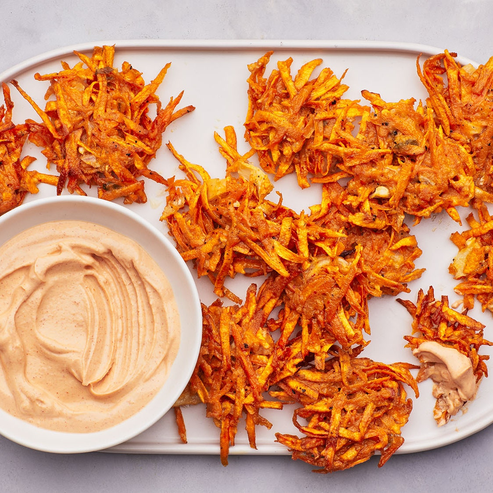

Spicy Kimchi Fritters

Description
The key to getting crispy burnished edges on these fritters is to wring out as much liquid as possible from the sweet potatoes before frying. The spice from the chopped kimchi in the fritter batter and the gochujang yogurt dipping sauce offset the natural sweetness of the sweet potatoes. A great appetizer or an indulgent snack, these are best eaten right away. If you’re feeling extra-ambitious, make your own homemade kimchi too. —Diana Yen
Ingredients
- 1 lb. sweet potatoes (about 2 large or 3 medium), peeled
- 2 large eggs
- ¾ cup drained finely chopped kimchi
- ½ cup all-purpose flour
- 1 tsp. Diamond Crystal or ½ tsp. Morton kosher salt, plus more
Freshly ground black pepper
Vegetable oil (for frying; about 1 cup)
- ½ cup plain whole-milk Greek yogurt
- 1 Tbsp. gochujang (Korean hot pepper paste)
Preparation
- Preheat oven to 200°. Grate sweet potatoes on the large holes of box grater or in a food processor with the grater disk. Transfer to a clean kitchen towel or several layers of paper towels. Gather ends of towel and squeeze over a large bowl to wring out as much liquid as possible; discard liquid. Wipe out bowl and place sweet potatoes, eggs, kimchi, flour, and 1 tsp. Diamond Crystal or ½ tsp. Morton kosher salt in bowl; season with pepper. Mix batter with a fork to combine.
- Pour oil into a large cast-iron or nonstick skillet to come ¼" up sides; heat over medium-high until shimmering. Drop heaping tablespoonfuls of batter into skillet, taking care not to crowd. Using a heatproof spatula, gently flatten fritters. Cook until undersides are browned and crisp, about 2 minutes. Turn over and cook until browned and crisp on the other side, about 2 minutes. Transfer fritters to a rimmed baking sheet lined with several layers of paper towels and let drain. Transfer to a wire rack set inside a rimmed baking sheet and slide into oven to keep warm. Repeat with more oil and remaining batter.
- Mix yogurt and gochujang in a small bowl; season with salt. Transfer fritters to a platter and serve with gochujang yogurt for dipping.